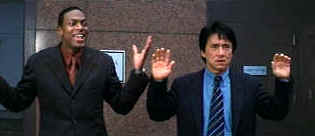
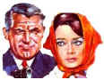

| Rush
Hour 2 (SE)/ C+, A |
| New Line/2001/90/ANA 2.35 |
You can dilute Jackie Chan successfully. One part Jackie plus one part
Owen comes up with new world gold (Shanghai Noon). One part Jackie and one part Chris comes up with a far cruder
substance. Rush Hour teamed
the acrobatic Chan and the garrulous Tucker in a Los Angeles action adventure. Rush Hour 2
tries to capitalize on any good will built by the first film but loses out for lack of originality.
 |
| Does motor mouth ever stop? ©New
Line |
It's a pretty lame script. LAPD detective James Carter makes a vacation to
visit buddy Chief Inspector Lee in Hong Kong. Carter wants to see the sights without any trouble,
but Lee can't stay away from the job. Carter is alternately an unwilling sidekick and happy kicking
ass. When a bomb blows in office building taking out a couple of U.S. Customs agents, Triad king
Ricky Tan is the chief suspect. Lee gets hot on the trail and dodges fists and personal agenda in
pursuit. Don't worry, there are a couple of hot babes to add spice to the Rush Hour 2
dish..
The action shifts from Hong Kong to Los Angeles when Carter is forced to return
to the States with Lee at his side. The bad guys are waiting for them and before you can say Jackie
Chan, Carter and Lee find themselves in Las Vegas. That's provides a new phalanx of neon night
lights on which director Brett Ratner capitalizes.
The action ante gets a raise for the last fifteen minutes of the film featuring
casino high jinx and some aerial acrobatics.
As in Rush Hour, the sequel is short on the best of Jackie Chan stunts. The
Hong Kong scaffolding sequence has lots of potential but seems unexploited. The fights featuring
Chan and Tucker going knuckle to knuckle and toe to toe with the bad guys are pretty lackluster.
You keep hoping for some imagination, but it just isn't there.
On the plus side, Brett Ratner once again directs with colorful energy. His
scenes maximize the garish aspects of the cityscape, finding color in every corner and storefront
sign. It makes Rush Hour 2 a visual feast.
There's a bit too much Tucker riffing for me, and there seems to be less charm
in evidence. Even Jackie gets fewer good moments than in the first teaming of the pair. Chan seems
like he's coasting through the Inspector Lee role, and Tucker, well, he looks like he's having a
blast. I guess that's good. Diminutive John Lone plays the dangerous Tan. He always a bit fey even
when playing dangerous character. Zyi Zhang exercises some high kicks as Tan's right leg and
Roselyn Sanchez postures well enough as a Secret Service undercover hottie.
Once again, New Line has packaged the Rush Hour 2 goods in a loaded
special edition package. Part of the newly coined Infinifilm line, it includes audio
commentary from an enthusiastic director Brett Ratner and writer Jeff Nathanson. Other special
features range from a Hong Kong introduction from Jackie Chan to a student film from Ratner.
There's Kung Fu choreography, scene anatomy and even a fashion show of sorts.
Rush Hour 2 has been turned into a smashing DVD. Images are free of
artifacts. Clean, delineated, sharp edges fill the widescreen with unerring consistency. You won't
miss a detail of the busy show. Color is fabulous. Saturated reds to die for: there's more lucky
Chinese red is painted on the screen than in recent memory. Deep, luscious
blacks, and a picture with more energy than twin Tuckers. Shadow detail preserves varied lighting.
New Line offers up a Dolby Digital EX 5.1 or DTS ES 6:1 soundtracks. Both are very active. The DTS
needed a 5 dB adjustment down.
|
|
|
|

Charade/A,B

Successfully combining romantic comedy and suspense is no small achievement. Charade does it
with panache.

Selections from the Feature Archive include articles on
Akira Kurosawa, Blonde Bimbos,
Frank
Darabont, Steven Culp,
John
Herzfeld or Vietnam: The
Hollywood Pariah, and many more....
Director Walks the Wire
Balanced by an armor of movie lore and filmmaking daring, director John Herzfeld is comfortable
walking the high wire. Check out this interview by Stu Kobak.

 Have you visited Home Theater
Talk lately? One of the friendliest places on the Net for Home Theater and DVD discussion, you
can get help for installation problems or simply share your opinions with other Vidiots. Have you visited Home Theater
Talk lately? One of the friendliest places on the Net for Home Theater and DVD discussion, you
can get help for installation problems or simply share your opinions with other Vidiots.

ISF Monitor Calibrations in the
Tristate New York area. Lots of hardware info and frequent hardware peaks from video expert Kevin
Miller. They may be judgmental, but that's the point, isn't it. Lots of DVD reviews plus news and
more.

The AV
Science Forum provides great feedback on the latest home theater equipment with a wide range of
opinions. Outstanding home theater resource.

An on-line Home Theater magazine with excellent hardware reviews,
including thorough and responsible research. Check it out.
|